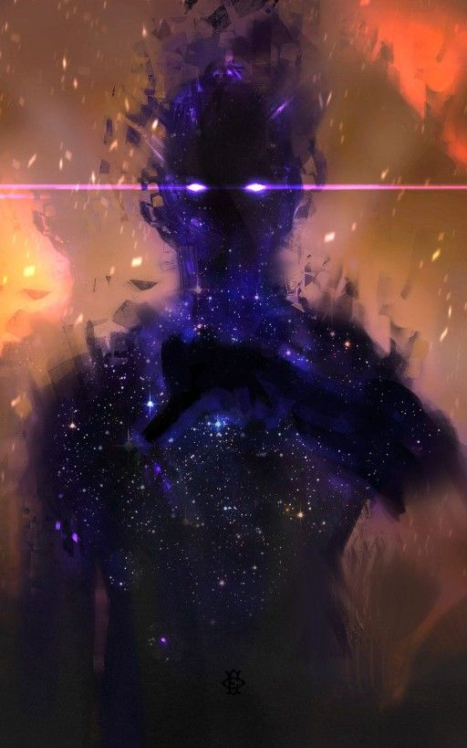
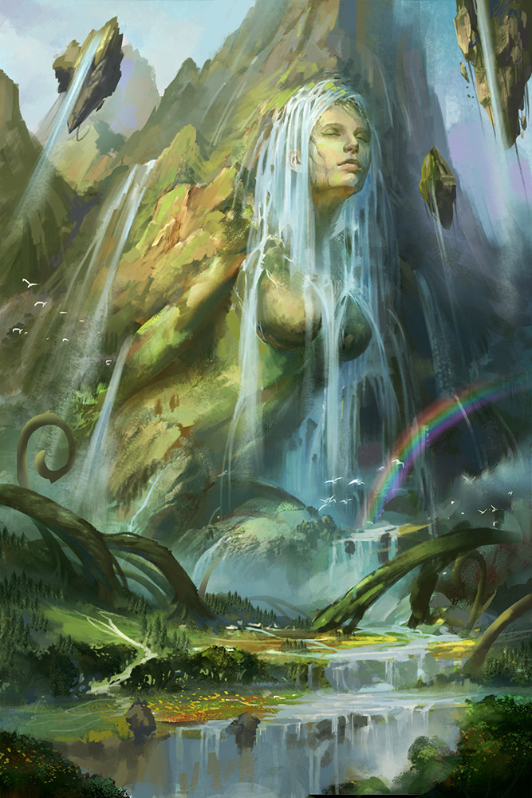
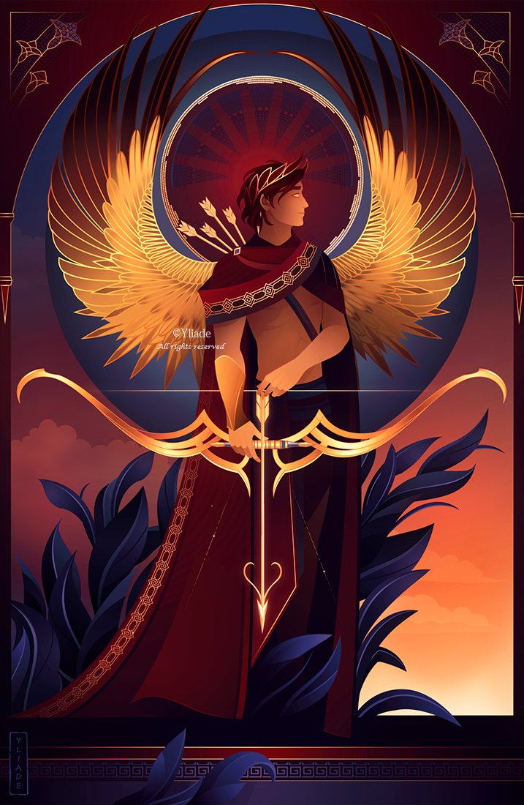
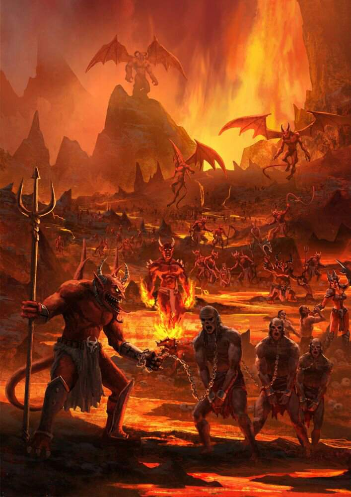
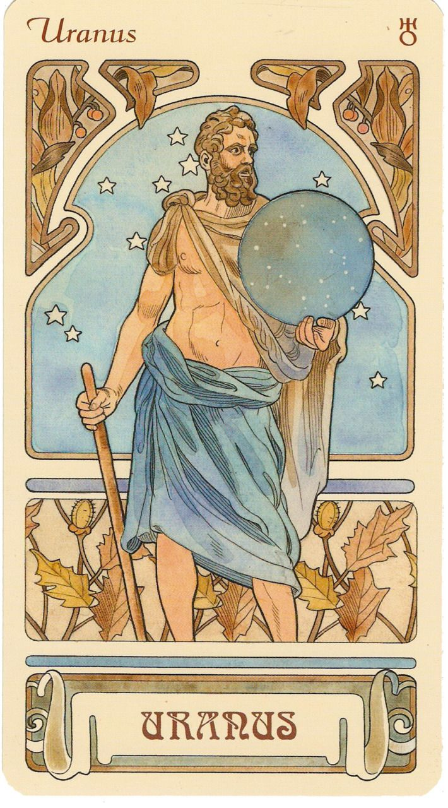
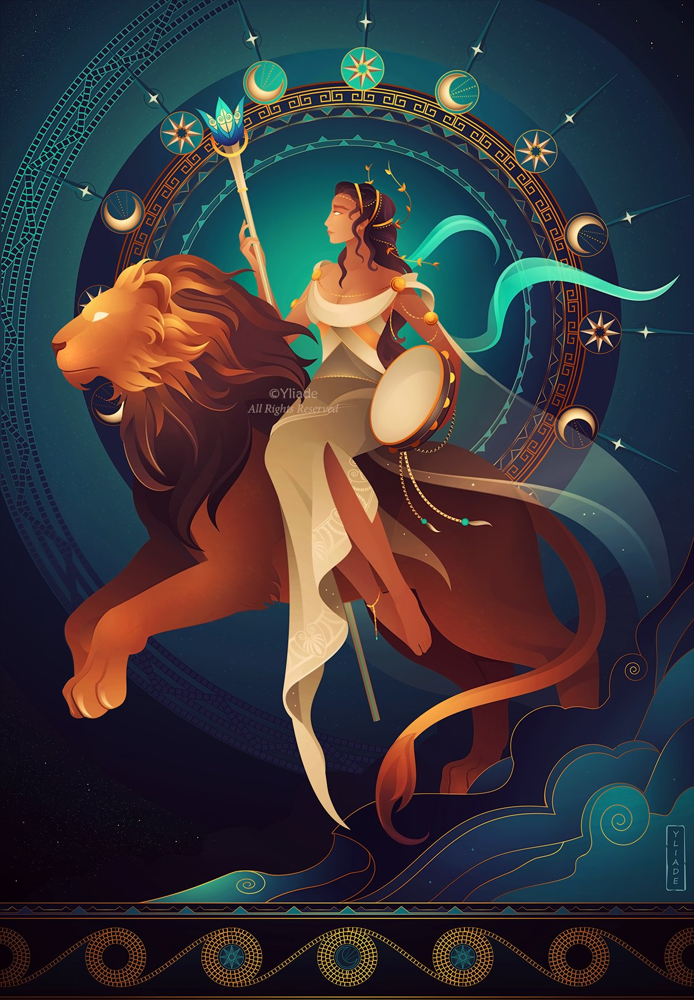
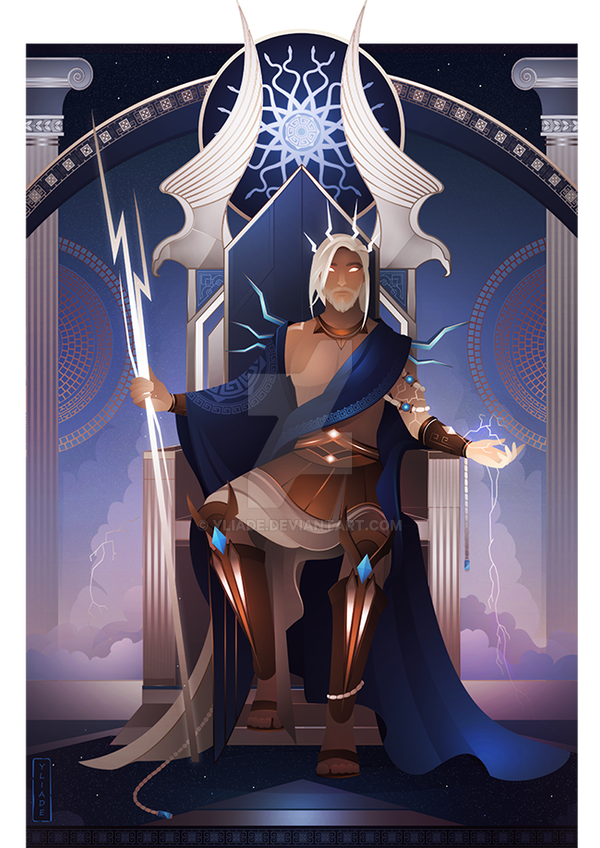

The blog will be simple, and the blog will consist of
some basic concepts in the Theogony and the Olympic Gods
Introduction of the Gods
In this section, I would like to discuss about the major
Gods and Goddesses in the Iliad and some brief
discussion regarding asexual reproduction.
Let us talk about the major Gods and Goddesses first.
Genesis - The Initial Deities
Chaos & Gaia & Tartarus & Eros

If we would discuss Hesiod's Theogony, we would start with the
initial four. The first beings after Chaos were the Gaia,
Tartarus and Eros. Chaos provides the beginning for creation.
So we can say that Chaos created the universe. Thus, the start
of the genesis will be Chaos. Chaos, also represented the mass
of the four basic elements - earth, air, fire, and water - from
which the university is created. (Theogony, )

Now turn our focus to Gaia. She was the representation of Earth,
and fertility mother from Chaos. In the later stage, we would
discuss regarding the birth of Gaia with the topic of asexual
reproduction in Hesiod Theogony. Most importantly, Gaia was the
first deity who was recognized as female.

Next, we would discuss Eros, who also was the descendant
of the initial deity, Chaos. The deity represents the concept
of Love, which will be essential
in later stages.

Alas, we would look at Tartarus, who also was the descendant
of the initial deity, Chaos. The deity represents an inner part
of Earth, which placed very deep inside the Earth. The place was
designed to become the underworld of Earth, and served as a place
of punishment, which jails the individuals who commited severe
crimes or mistakes in the mythology.
Uranus / Ouranos & Gaia

Talking about Uranus, he was the deity that represents the sky,
lightning and thunder of the Earth. He was the descendant of
mother Earth, thus produced by Gaia. Gaia had produced Uranus
by her own, which was an example of asexual reproduction. Later,
Uranus and Gaia had married and gave birth to the twelve titans and
the three Cyclopes and three Hecatoncheires. The twelve Titans in
the future would mate with each other, which is another evidence
of incest among the deities, had gave birth to some of the most
important deities in the Greco-Roman mythology. Among all the
titans, two of the most important ones were Rhea and Cronus/Kronos.
Beside the eighteen deities listed above, Uranus had also gave birth
to another deity, Aphrodite, born from the Uranus' genital. The
castration of Uranus was done by their children, Kronos, who was
intructed by his mother, Gaia.
Rhea & Kronos
Rhea

Kronos
Two of the Uranus and Gaia's children, had decided to mate
themselves together, but forgot to take measures to prevent
conception. Thus, when Rhea was about to gave birth to their
children, Kronos decided to eat their Children up. Why Kronos
decided to eat up their children was because his behavior back
in the castration of his father. Kronos was afraid that their
children will do something similar that he had done before. Thus,
to prevent something like this happen in the future, Kronos
decided to fundamentally solve the problem, by devouring
their children.
Nonetheless, Zeus and his sibling were still
born in this world as their mother, Rhea, ambushed the children
on the Crete island and lied to his husband by giving Kronos
clothes to eat. Thus, the children, the six major deity in
Greco-Roman mythology named as Zeus, Hera, Poseidon,
Hades, Hestia, Demeter, were born without harm from their father.
Eventually, Kronos did face the same fate as his father that Kronos
was overthrown by Zeus and his siblings.
The Twelve Olympians
Zeus & Hera

Zeus, god of storm and guardian of state and justice, after many
incidents, was elected as the leader between The Twelve Olympians.
The most import attributes of the god were thunderbolts,
scepter and throne. The animal that represents Zeus was Eagle.

Hera, god of childbirth and marriage, also as the first wife,
were another important deity in the mythology. The attributes
of the goddess were polos, veil and next to Zeus. The animal
that represents Hera was Cow and Peacock.
Two of the Rhea and Kronos's children, had decided to mate
themselves together, where most of the stories in the Hesiod
Theogony revolved around these two. Zeus had fought with his
father, and the Giants and Typhoeus, and punished Prometheus
for stealing fire for human kind. He had also sent Pandora as
the punishment to the mortals, by giving Pandora a box that
contains all the evil and hope. The human kind had opened the
box as Zeus planned, and thus the punishment is done.
Parthenogenesis in Hesiod's Theogony
The Difference in Male and Female - Parthenogenesis
The ability of reproducing in Hesiod's Theogony was fairly
different between two genders. Even though we have examples
such as Aphrodite, and some other deities that were
born asexually, the birth of these deities would need an
external help. In other words, we could conclude that the
fathers could give birth to deities without sexual intercourse,
but they would need some extra help from others.
Referring back to the examples given above, the birth of Aphrodite
would need the intervention of Kronos and Gaia. Without Kronos
castrating his father, we would not know if Aphrodite would born
or not if this incident had not happened in the myth. Besides,
according to the myth, we would need Uranus's genital to mix
with the sea to give birth to Aphrodite.
Now, there were some exceptions and edge cases in the myth,
the birth of Athena from Zeus's head count as one. As in this
story, we have Athena, born from one of the organs from Zeus,
brain. However, we know that from the story, Athena, who we would
characterize as a 2D character before birth (HAHA ANIME WEEB),
was created by Metis before Zeus had produced her by himself.
Arguably, in modern concept, we would say that the holder of the
intellectual property was Metis, which now altered her birth from
asexual to sexual as we have a mother role and a father role.
But from a physical aspect, she did come out of Zeus's head, so
we could also say it was asexually produced without external help.
Thus, we can conclude that the male deities in the mythology would
not enact single parent reproduction without any form of external
help, whether from another deity or another natural source.
Hesiod Theogony - relationship with other myths
We had also discussed this in the class, and there were some
examples we could examine.
The first one would be the Babylonian Enuma Elis, the
genesis in the Babylonian culture. In the myth, we have Apsu and
Tiamat, "merged" together and stored their offspring inside the
mother's body. Though the children later had caused many troubles
and tagedies in the family, Tiamat still rejected to kill them
to avoid the future fate. Ea, one of their grandchildren, had
destined to kill his grandfather, Apsu, and eventually did kill
him. Thus, the other children decided avenge for Aspu's death,
and the mother Tiamat had asexually reproduce some monsters to
help the children to finish their task.
In the end, Marduk, one of her children, fighted with her for
this avenge and won the battle. He then dissected her body
into two parts, which were the heaven and Earth according
to the myth.
The second one would be the Kumarbi. The myth is
a Hittite myth that also illustrated the castration of
Ouranos. The piece was especially important in multiple
aspects. The story in the myth was very valuable,
as it was another literature from the Hittite culture. Also,
the content was valuable as it depicted a literature that was
lost. Though the literature was written in Hittite language,
the names inside the literature has very little even none
connections to the culture. Some of the deities inside the
literature had connections with the Babylonian culture, and
most of the others had connections with the Hurrian culture.
With the deities that the myth included in mind, we would
conclude that the myth was originally from the group of people
who lived in the modern Turkey, around the north of Mesopotamia,
and spoke a completely different language compared with the Hittites.
Thus, the author concluded that the people spoke this language
had merged with the Hittites, which resulted in a assimilation of
their culture and the Hittite culture. The deities in the original
group of people were included in the Hittite culture. Hence, the
deities were recorded.
Most of the original piece were lost as time passed. However, there
were still three parts that the Hurrian deities were included in the
piece. The saga appreas to be in three parts:
The Struggle for the Kingship of Heaven,
The Song of Ullikummi
and
Kumarbi and the Hero of the Flood. All of the three
sections of the myth were important, but I would be only
discussing the The Song of Ullikummi
, as it was heavily related to the birth of Zeus.
A little synopsis of the section in the myth was the birth
of the Hittite version of Zeus birth. Kumarbi, in the story
was the father of all deities, cursed the storm god. The
child Stone, was taken away from the goddess of childbirth,
and Kumarbi gave the Stone the name Ullikummi. Later, the
child Stone grows with incredible speed, and alas even as
high as heaven according to the myth. The speed of the child's
growth was astonishing, and worrisome. The gods,
namely the Storm-god and his sister Istar worried that the child
may challenge them in the later stage (sounds familar isn't it?).
However, both of them and the rest of the gods were all unable
to stop the growth of the stone. Alas, the gods went to find
Ea, the god of Wisdom, for help. In the end, Ea's method did
not work, and the child Stone had fought with the Storm-god
and defeated him, claimed himself as the king of the Gods.
Hera
Now we should talk about the Parthenogenesis inside Theogony.
We had already introduced some of the most important deities
that performed this behavior in epic poetry. Thus, we can look
at the incidents and elaborate this incident towards the gender
role in ancient Greece. The practice reflected the conflict
and difference between genders and other factors that we could
still discuss at this date. The one example I will be discussing
is Hera. Initially, Hera used this behavior to resist his
husband, Zeus. In the later stage, this behavior backfired as
this action enforced Zeus's reign at the Olympics. The nature
of this act in this circumstance illustrated the gender
difference and conflict, illustrating the harmonic and stable
relationship between deities.
The following content would contain many quotes from the second
source I use. The source is linked below at the end of the
webpage. Now I will be discussing Hesiod's Theogony and Hera.
Throughout the myths that we knew described ancient Greece,
we would have noticed that much of which does not have women
in the literature. Nonetheless, if the role of women existed,
the role was neglected to a large degree.
They would play non-major characters inside the epic.
We can also tell this trend or custom by looking at the role
assignment of opera in ancient Greece. None of the female
characters were cast by females; instead, a male would cast
the characters inside the plays.
However, according to the author, one of the significances of
Hesiod's Theogony was the increased female participation in
the myth and the behavior they did to give birth to their
descendants. As we know, for reproduction, we would need males
and females to accomplish the task. In Hesiod's Theogony,
we would observe many examples of female individuals'
reproducing by themselves. These differences from the norm
showed an unparalleled relationship between the Theogony and
real-life back in Greece. Hesiod had used this method to
distinguish between ordinary human kinds and the deities.
Note that the content inside the Theogony does not equal
support towards feminists in today's content. Hesiod had
assigned the female deities various roles in the story.
Hera was the example of resistance against his husband but,
in the end, actually helped him to enforce his reign.
Hera's asexual reproduction is where various expressions converge.
The main reason behind her anger was the child Athena, who was born
from Zeus's head. The situation was interesting as we know Athena
was also asexually reproduced by Zeus. Zeus's wife believed her
husband cheated on her and decided to use the same method,
parthenogenetic, to express her rage. Before Hera had asexually
reproduced Hephaestus, she had already reproduced several children
for Zeus, namely Hebe, Ares, and Eileithyia.
Further, the weight given to the children inside the literature
was noticeable. The first generation, or the normal descendants
born with sexual intercourse between the couple, had got nearly
no descriptions inside the Theogony. In contrast, we have
Hephaestus, who was widely praised belong the deities for
his power of crafting and smithing.
One nuance of the identity of Hephaestus in the Iliad and
Theogony is that Homer had acknowledged Hephaestus as the
child of Zeus and Hera. In comparison, Hesiod would
counter that argument and state that Hephaestus was the child
of Hera herself.
Another difference would be the characteristics of the deity
in the two different sources. Homer had depicted Hephaestus
as the one who hated Hera regarding his disability and low
status among the deities. On the other hand, Hesiod had
covered the negative characteristics of Hephaestus,
further changing his body from a monster to a disabled man.
The difference concluded that Hephaestus was not a monster,
and neither he nor his mother, Hera, suffered the same fate
as Tiamat and her descendants.
The resistance from Hera helped Zeus to enforce his reign as
Hera's child, Hephaestus's ability. As we mentioned before,
the gods praised the ability of crafts and smithing.
Thus, Zeus had employed Hephaestus's ability for his purpose.
Thus, Hephaestus had become an ally with Zeus, and he had
created the Pandora and the crown she wore.
Short Conclusion
Inside the Hesiod's Theogony, there were many theogonic
and cosmogonic thoughts that human should still think about. The
impact of the myths prolongedly affects the human generation
day by day. One could tell with so much artifacts and artistic
literatures that our predecessors produced throughout the human
history. With the influence of the myths, we could think about
the impact of the gist of the myth in the later eras. Especially
with the gender role inside the myth, the topic is still discussed
at this date. With many different parties each represent a character
inside the Theogony, we can find releveance and resemblence
in the myth and real life. Gender difference, in this situation of
reproduction, has showed a paradoxical result between the aim and
the results. All the deed that Hera done had become a support to
Zeus, and the quarrel, or difference became bigger. Thus, we could
conclude with the paradoxical and concordal nature of gender and
how its displayed in the myth had affect human generations prolongedly.